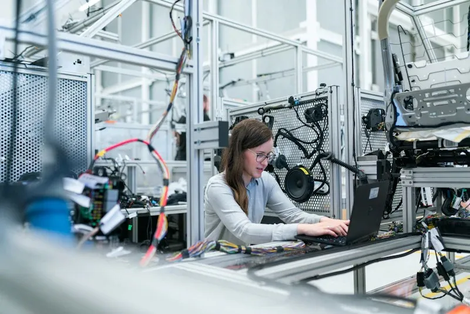
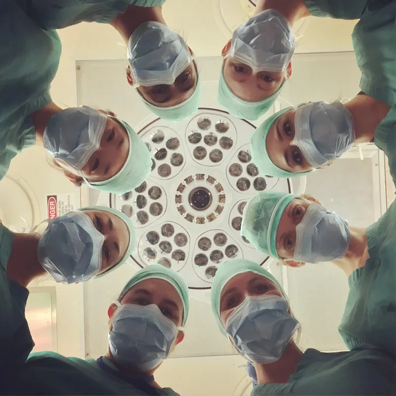

Device Care
Choosing the right medical device is one of the most consequential decisions a hospital administrator makes. From specification validation to total cost of ownership, this guide walks through every factor you should weigh before procurement.
Technology
AI-Powered Diagnostics: The Future of Patient Monitoring
How machine learning is transforming cardiac arrhythmia detection and what it means for frontline clinicians.

Cardiology
Gentle Monitoring Technologies to Promote Heart Wellness
Non-invasive wearable ECG monitors are changing how cardiologists track patients between clinic visits.

Regulatory
Understanding CDSCO MDR 2017 Compliance for Hospital Procurement
A practical guide for hospital purchase committees on navigating India's medical device regulatory framework.

Device Care
Preventive Maintenance Checklist for ICU Equipment
Download and adapt this 32-point checklist used by STCKLY's biomedical engineers during every AMC visit.
Clinical Tips
Optimising Ventilator Settings for Post-Surgical Patients
Clinical parameters every ICU nurse should know when initiating ventilatory support in the immediate post-op period.

Technology
Wireless Ultrasound: How Point-of-Care Imaging Is Evolving
Handheld ultrasound probes are transforming emergency medicine and rural healthcare accessibility across India.